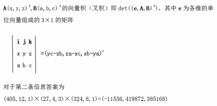

BZPRO
#4623. Styx
内存限制：128 MiB
时间限制：30 Sec
提交
提交记录
讨论
题目描述
A国计划在战争中对B国发动反物质武器，此计划定名为Styx。为阻止两国从此大肆使用反物质武器，你决定破坏A
国的反物质武器（假设你有破坏它们的奇怪技巧）。武器的位置显然是机密，但是某人留下了关于武器位置的加密
信息，并告诉了你解密方式。
该信息是一个n个点（1..n）的树，根节点为1，每个点上均有一个点权Ai。
定义f(n)= ∑gcd(i,n)，其中i=1..n；
g(n)=∑d|nf(d)；
S(i)= ∏Aj,其中j节点在i节点到根的路径上;
s(i)表示以i节点为根的子树大小；
i节点对应的三维向量F(i)=(g(S(i)),4*i,s(i))。
A国存放武器的地点共有m个，每个地点都被表示为数对（x，y），代表着F(x)×F(v1)×F(v2)×F(v3)×…×F(y)
（其中vi在x到y的路径上），即路径上的向量按次序排列后的向量积，最后得出的向量即是存放武器的位置。你的
任务即是对每条信息进行解密，阻止Styx。
输入格式
第一行包含两个正整数n，m (n,m<=100,000)
第二行n个数字表示Ai,(1<=Ai<=1,000,000)
以下n-1行表示树边（无向）
接下来为一个空行，之后m行表示每个地点的加密信息x,y(1<=x,y<=n)
输出格式
对于每个地点，输出解密后的坐标（mod 1000000007，取值在0..1,000,001）
样例
样例输入
3 3
9 4 9
1 2
1 3
1 1
3 2
3 3
样例输出
27 4 3
999988451 419872 385168
405 12 1
数据范围与提示
